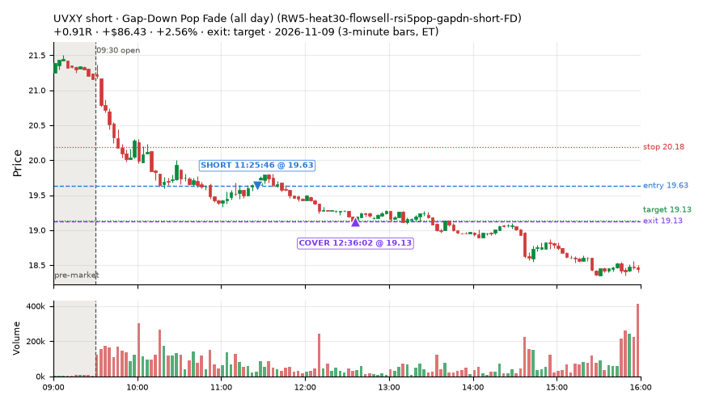
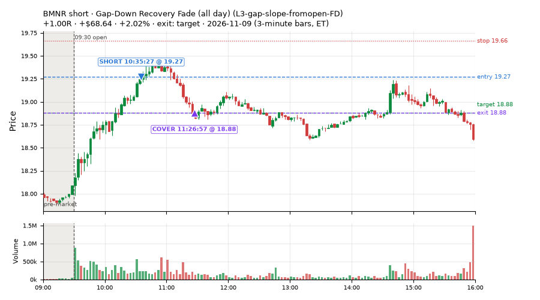
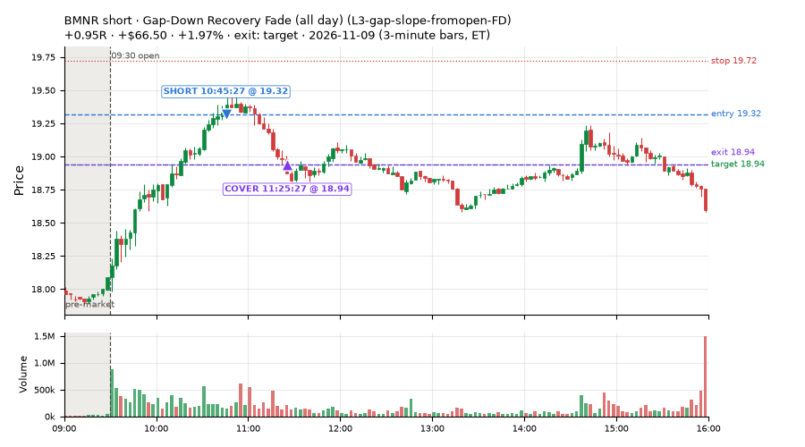
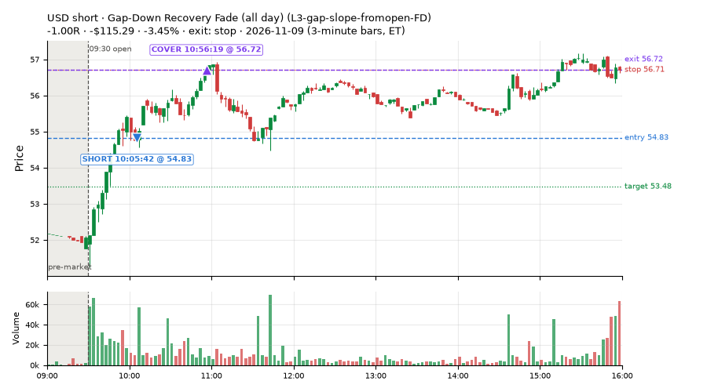
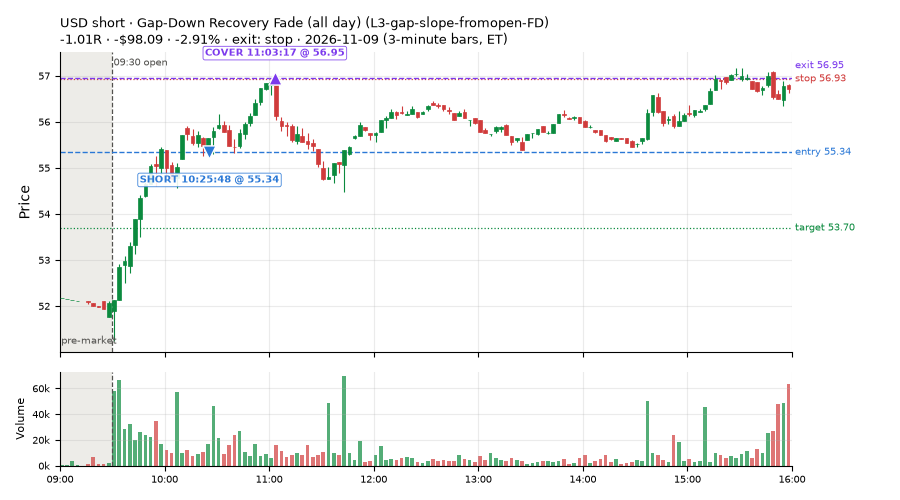
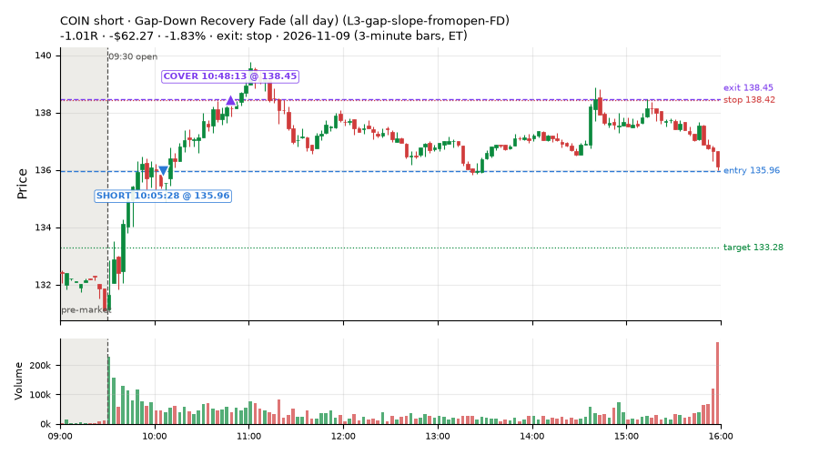
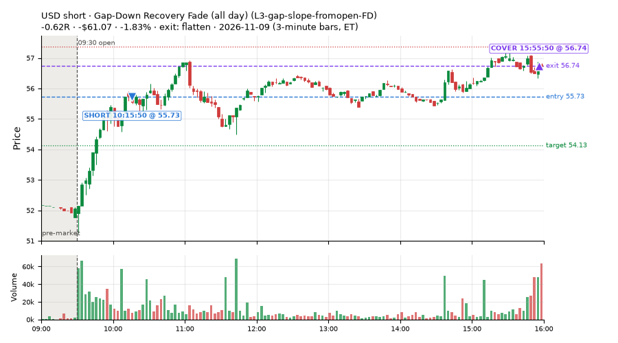
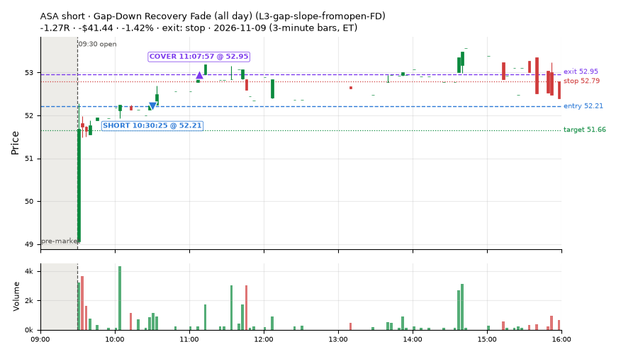

36 trades · win rate 31% · P/L $-172.26
PROBATION: no live setup has passed both locked test periods. 10 owner-directed setups added 2026-10-08 (MarcoFlow top 5 + 5 new), untested live. RW6G1 (RW6 + VWAP band guard) added 2026-10-09, probation.

| Symbol | Setup | Side | In | Out | Entry | Exit | Exit reason | % gained | P/L |
|---|---|---|---|---|---|---|---|---|---|
| UVXY | Gap-Down Pop Fade (all day) (RW5-heat30-flowsell-rsi5pop-gapdn-short-FD) | short | 11:25 | 12:36 | 19.63 | 19.13 | target | +2.56% | $86.43 |
| BMNR | Gap-Down Recovery Fade (all day) (L3-gap-slope-fromopen-FD) | short | 10:35 | 11:26 | 19.27 | 18.88 | target | +2.02% | $68.64 |
| BMNR | Gap-Down Recovery Fade (all day) (L3-gap-slope-fromopen-FD) | short | 10:45 | 11:25 | 19.32 | 18.94 | target | +1.97% | $66.50 |
| Symbol | Setup | Side | In | Out | Entry | Exit | Exit reason | % lost | P/L |
|---|---|---|---|---|---|---|---|---|---|
| USD | L3-gap-slope-fromopen-FD | short | 10:05 | 10:56 | 54.83 | 56.72 | stop | -3.45% | $-115.29 |
| USD | L3-gap-slope-fromopen-FD | short | 10:25 | 11:03 | 55.34 | 56.95 | stop | -2.91% | $-98.09 |
| COIN | L3-gap-slope-fromopen-FD | short | 10:05 | 10:48 | 135.96 | 138.45 | stop | -1.83% | $-62.27 |
| USD | L3-gap-slope-fromopen-FD | short | 10:15 | 15:55 | 55.73 | 56.74 | flatten | -1.83% | $-61.07 |
| ASA | L3-gap-slope-fromopen-FD | short | 10:30 | 11:07 | 52.21 | 52.95 | stop | -1.42% | $-41.44 |








Signal to fill: median 2s, 90th percentile 5s (36 trades). Bars close each minute; the order follows the bar close.
Best excursion (MFE): median 0.13R; worst (MAE) median 1.01R. 56% of trades never got +0.25R in our favour; 0 reached +1R and still closed at or below 0.
| Symbol | Setup | Best R | Worst R | Closed R |
|---|---|---|---|---|
| FNDE | MF4-h40-open-flowsell-FD | +0.45 | -1.13 | -1.13 |
| COIN | L3-gap-slope-fromopen-FD | +0.43 | -1.04 | -1.01 |
| BAC | MF4-h40-open-flowsell-FD | +0.41 | -1.01 | -1.01 |
| PNC | MF4-h40-open-flowsell-FD | +0.31 | -1.02 | -1.07 |
| USD | L3-gap-slope-fromopen-FD | +0.76 | -0.88 | -0.62 |
| Entry time | Trades | Win | Avg R | P/L |
|---|---|---|---|---|
| 09:50-10:30 | 11 | 0% | -1.00 | $-421.53 |
| 10:30-11:30 | 20 | 45% | -0.27 | $220.45 |
| 11:30-13:00 | 5 | 40% | -0.06 | $28.82 |
| Setup | Trades | Win | Avg R | Adj R (net of SPY) | Avg R ex-market (all sessions) | P/L |
|---|---|---|---|---|---|---|
| Gap-Down Recovery Fade (all day) (L3-gap-slope-fromopen-FD) | 10.0 | 50% | -0.12 | +0.02 | -0.10 (beta -0.80, n 45) | $-133.35 |
| Gap-Down Rebound Overbought Short (all day) (L3-gap-slope-rsi5hi-FD) | 1.0 | 100% | +0.48 | +0.48 | -0.44 (beta -0.84, n 15) | $33.30 |
| Early Sellers, Mid-High RSI (all day) (MF2-open-rsimidhi-flowsell-FD) | 1.0 | 0% | -0.98 | -0.92 | -0.18 (beta -2.87, n 102) | $-27.63 |
| Early Sellers, Strong Heat (all day) (MF4-h40-open-flowsell-FD) | 17.0 | 6% | -0.94 | -0.34 | -0.29 (beta -1.55, n 106) | $-190.49 |
| Big Gainer Dip-and-Pop (NS1-rsidip-rsi5pop-long) owner-directed; holdouts once: Sep-Oct +0.326R n10, Apr-Jun +0.056R n119 | 1.0 | 100% | +0.47 | +0.37 | +0.00 (beta +0.48, n 19) | $30.66 |
| Gap-Down Pop Fade, Heavy Selling (all day) (RW3-gapdn-rsi5pop-flowsell-short-FD) | 2.0 | 50% | +0.49 | +0.74 | +0.25 (beta -1.04, n 85) | $48.97 |
| Gap-Down Pop Fade (all day) (RW5-heat30-flowsell-rsi5pop-gapdn-short-FD) | 4.0 | 50% | -0.09 | +0.19 | +0.22 (beta -0.85, n 100) | $66.28 |
Market direction (SPY, beta 1) accounted for $-296.10 of today's $-172.26; the rest ($123.84) came from the setups themselves. Avg R net of SPY: -0.10 (incl. a hedge leg's cost; report only).
10 setups live today. Today: 263 signals, 36 taken, 23 lost because another setup held the symbol (9%). Since 2026-10-06 (25 sessions): 3189 signals, 1005 taken, 148 lost to other setups (5%). Peak open positions today 27 of 77 slots. Earnings blackout removed 1439 symbols before scanning.
Simulated playing time (not live): 2166 what-if trades of signals not taken, avg -0.06R, 54% winners; of them 148 lost to another setup (avg -0.19R).
Silent: intraday_momentum · Crowded out: MF4-h40-open-flowsell, MF3-open-flowsell-rsi5hi, MF5-flowsell-vwapup-rsi5hi · Starved: MF2-open-rsimidhi-flowsell
| Prio | Setup | Today sig / taken | Sessions | Signals / taken / trades | Taken/day | Expected/day | Lost to other setups | Lost to (setup n) | Top skip reasons | SIMULATED: not-taken n / avg R / win | Verdict |
|---|---|---|---|---|---|---|---|---|---|---|---|
| 1 | Gap-Down Pop Fade (all day) RW5-heat30-flowsell-rsi5pop-gapdn-short-FD | 9 / 4 | 17 | 141 / 100 / 100 | 5.88 | 12.79 | 0 | – | spread / quote / size 17, not shortable / shorts off 16, daily loss cap 8 | 41 / +0.08R / 58% | ok 29.4 entries/week |
| 2 | Gap-Down Pop Fade, Heavy Selling (all day) RW3-gapdn-rsi5pop-flowsell-short-FD | 7 / 2 | 17 | 158 / 85 / 85 | 5.00 | 13.59 | 1 | CWT14-failbrk-pdl-p10-lowvol-long 1 | not shortable / shorts off 27, daily loss cap 23, spread / quote / size 22 | 73 / +0.22R / 63% | ok 25.0 entries/week |
| 3 | Early Sellers, Mid-High RSI (all day) MF2-open-rsimidhi-flowsell-FD | 4 / 1 | 15 | 215 / 102 / 102 | 6.80 | 10.09 | 4 | RW5-heat30-flowsell-rsi5pop-gapdn-short-FD 4, RW3-gapdn-rsi5pop-flowsell-short-FD 4, MF2-open-rsimidhi-flowsell-FD 4 | spread / quote / size 55, not shortable / shorts off 30, daily loss cap 24 | 113 / -0.30R / 29% | ok 34.0 entries/week |
| 4 | Early Sellers, Strong Heat (all day) MF4-h40-open-flowsell-FD | 27 / 17 | 15 | 246 / 106 / 106 | 7.07 | 16.45 | 4 | RW5-heat30-flowsell-rsi5pop-gapdn-short-FD 4, RW3-gapdn-rsi5pop-flowsell-short-FD 4, MF2-open-rsimidhi-flowsell-FD 3 | not shortable / shorts off 58, daily loss cap 43, spread / quote / size 35 | 139 / -0.08R / 61% | ok 35.3 entries/week |
| 5 | RSI Collapse Dip Buy (all day) ST7-rsi50dn-long-pm-t1s1-FD | 5 / 0 | 11 | 42 / 21 / 21 | 1.91 | 2.17 | 0 | – | spread / quote / size 19, daily loss cap 2 | 21 / +0.21R / 57% | slow 9.5 entries/week; ~6 weeks to 60 trades |
| 6 | Gap-Down Rebound Overbought Short (all day) L3-gap-slope-rsi5hi-FD | 33 / 1 | 7 | 363 / 15 / 15 | 2.14 | – | 4 | L3-gap-slope-fromopen-FD 4 | not shortable / shorts off 282, daily loss cap 41, spread / quote / size 21 | 335 / +0.04R / 72% | slow 10.7 entries/week; ~6 weeks to 60 trades |
| 7 | Gap-Down Recovery Fade (all day) L3-gap-slope-fromopen-FD | 157 / 10 | 9 | 1104 / 45 / 45 | 5.00 | – | 18 | L3-gap-slope-fromopen-FD 18, L3-gap-slope-rsi5hi-FD 2 | not shortable / shorts off 915, daily loss cap 100, spread / quote / size 25 | 1057 / -0.07R / 51% | ok 25.0 entries/week |
| 8 | Big Gainer Dip-and-Pop NS1-rsidip-rsi5pop-long | 2 / 1 | 23 | 25 / 19 / 19 | 0.83 | 0.92 | 0 | – | spread / quote / size 6 | 6 / +0.39R / 100% | slow 4.1 entries/week; ~15 weeks to 60 trades |
| 9 | Big Loser Flush Buy NS5-sma50-flush-oversold-long | 0 / 0 | 23 | 44 / 27 / 27 | 1.17 | 2.41 | 0 | – | daily loss cap 13, spread / quote / size 4 | 17 / +0.04R / 53% | slow 5.9 entries/week; ~10 weeks to 60 trades |
| 10 | Early Sellers, Strong Heat MF4-h40-open-flowsell | 19 / 0 | 23 | 134 / 21 / 21 | 0.91 | 7.24 | 68 | MF4-h40-open-flowsell-FD 63, MF2-open-rsimidhi-flowsell-FD 9, MF3-open-flowsell-rsi5hi-FD 4 | symbol held by another setup 68, spread / quote / size 25, not shortable / shorts off 19 | 113 / -0.26R / 50% | crowded-out 68 of 134 signals (51%) lost to setups already holding the symbol |
Every trade is attached as a CSV you can open and edit in Excel or Google Sheets. Live page: https://misiti15.github.io/MCF/live/